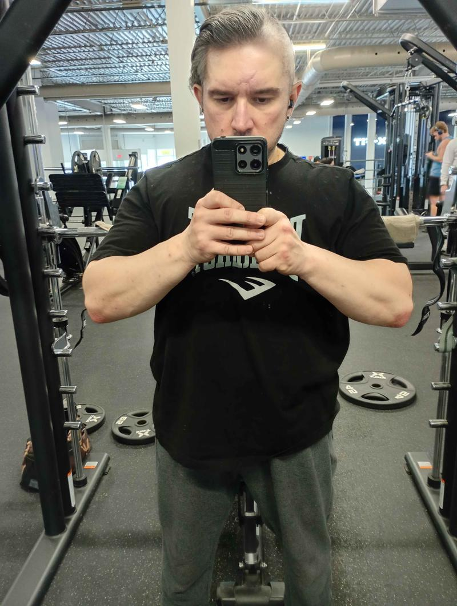
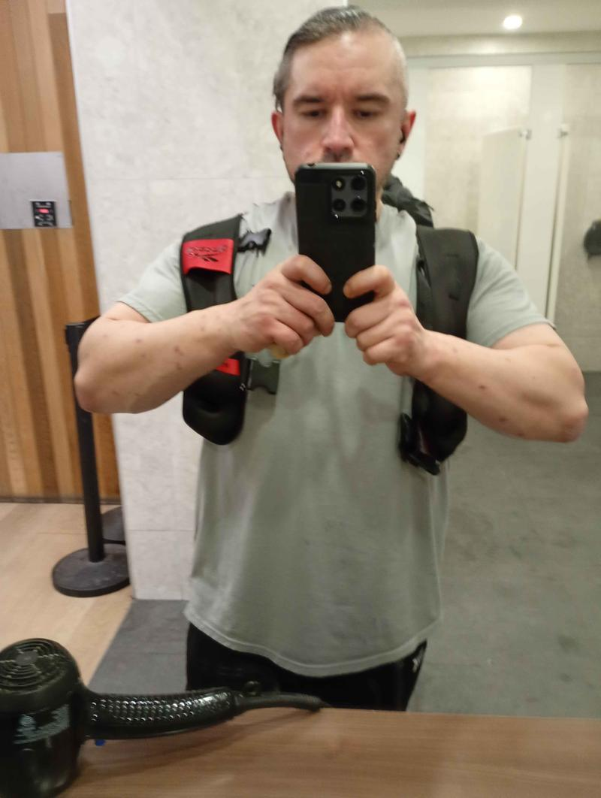
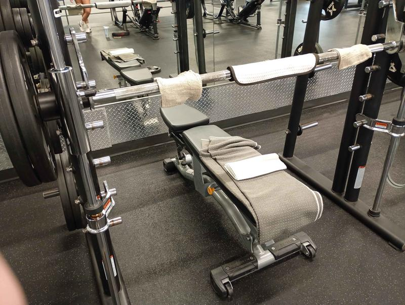

Origins
Sixteen years in the making — not two.
This didn't start in 2019, and it didn't start with a photo. It started in 2010, at 30 years old — zero real knowledge of training, nutrition, or structure. Everything documented publicly since 2013 is the visible record of a system that was already three years in the making.
2010–13
The Beginning — learning from zero
2013–18
Progressing to the Golden Era — habits, structure, technical precision
2018–25
The Dark Stage — the interruption, structure dissolves
2025–26+
The Comeback — reset, rebuild, more precision than any era before it
"The Pivot occurred at 45. 197.1 lb total body weight, 88.2 lb skeletal muscle mass, 22.9% body fat. These numbers didn't indicate dysfunction — they indicated equilibrium."
Biometric History — Measured, Not Claimed
Date
Weight
SMM
Body Fat
Context
May 27, 2018
173.7 lb
86.6 lb
14.4%
Tail end of the Golden Era — leanest point on record
Jun 28, 2025
197.3 lb
82.0 lb
27.4%
Depth of the Dark Stage, pre-reset
Dec 2, 2025
197.1 lb
88.2 lb
22.9%
The Pivot — SMM already climbing, fat already falling
Mindset
THE PIVOT WASN'T A BREAKDOWN. IT WAS A BASELINE. 197.1 lb and 22.9% body fat at 45 weren't failure — they were the starting coordinates for the most precise rebuild yet.


